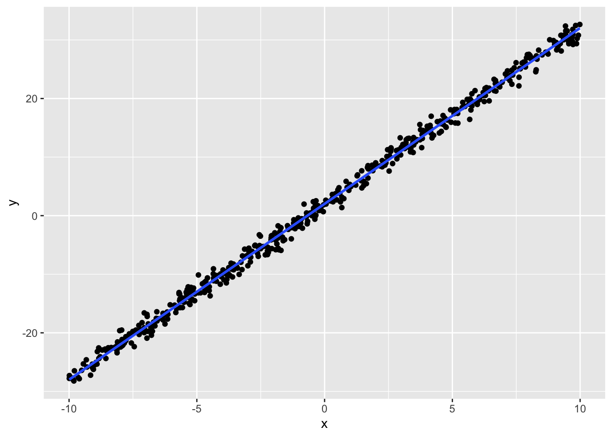
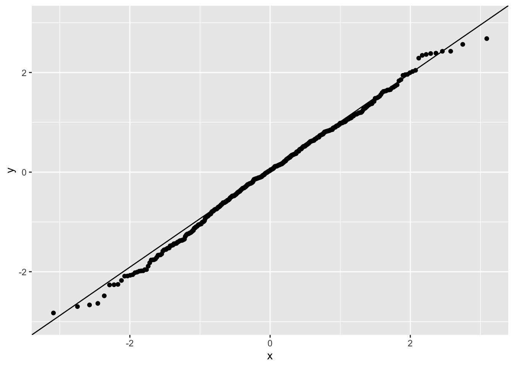
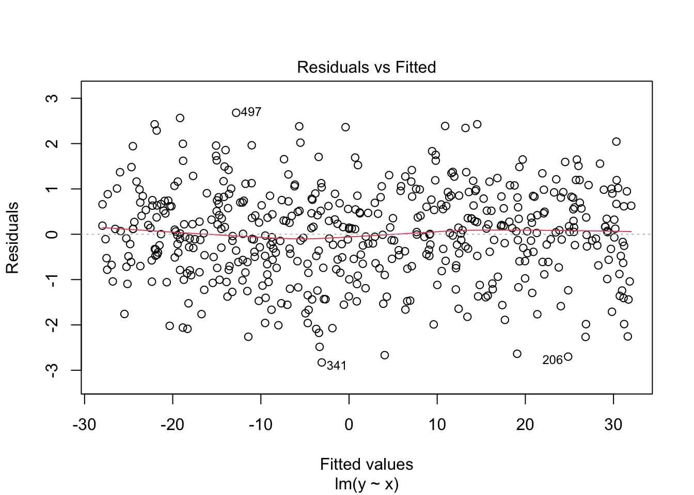
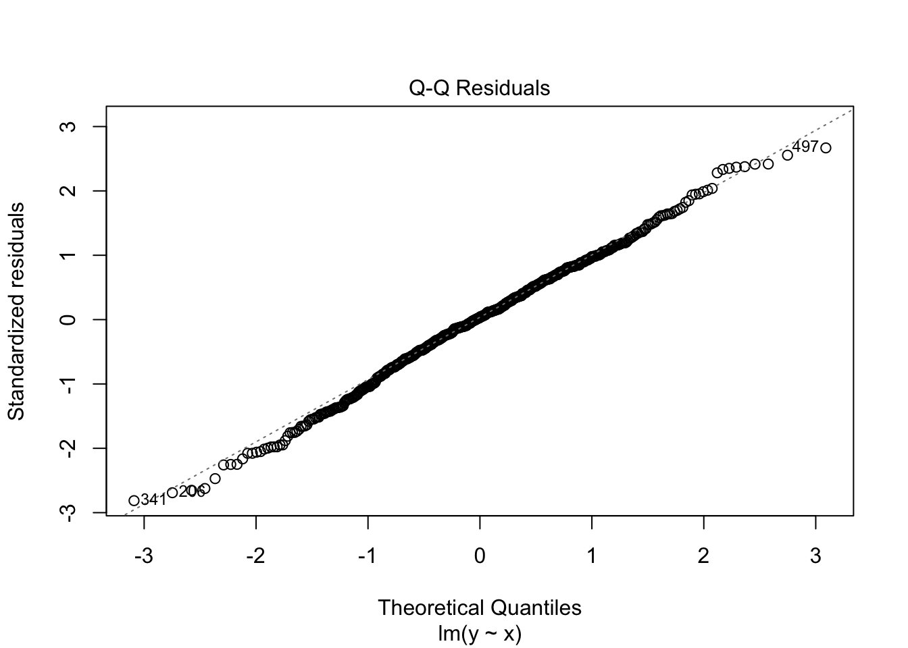
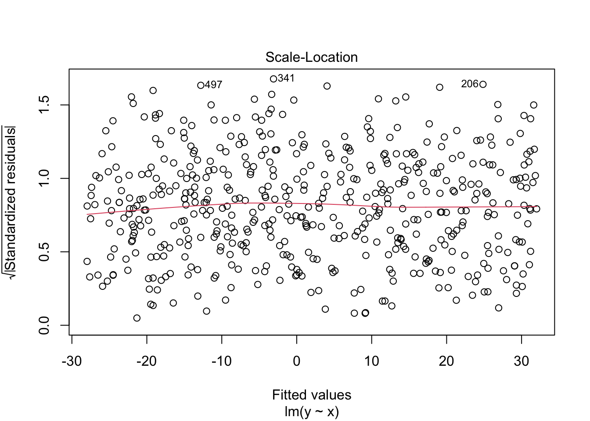
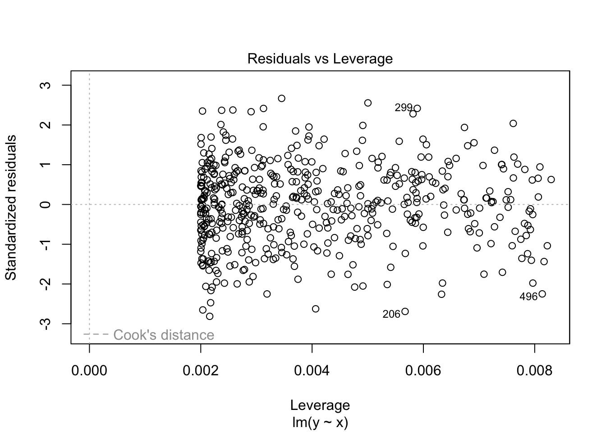
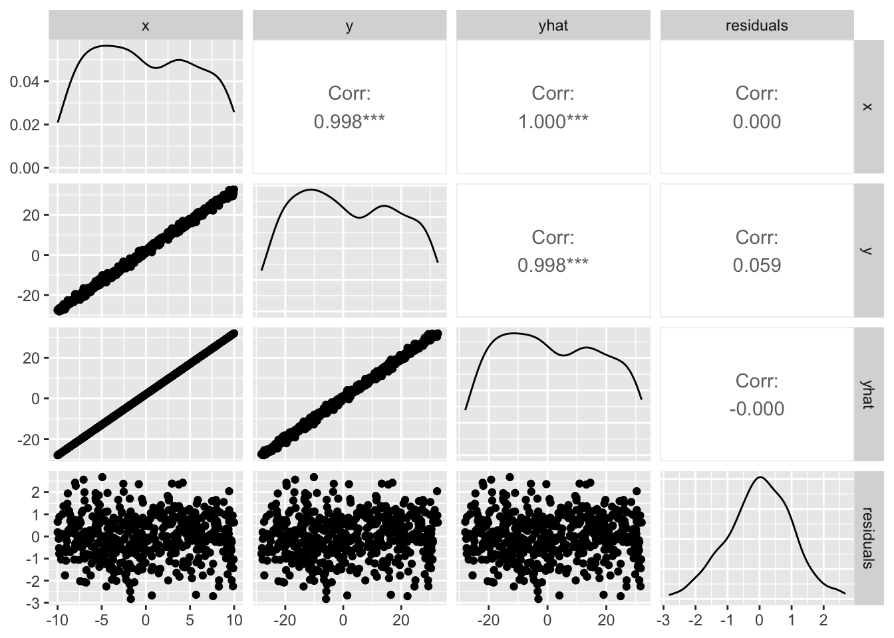
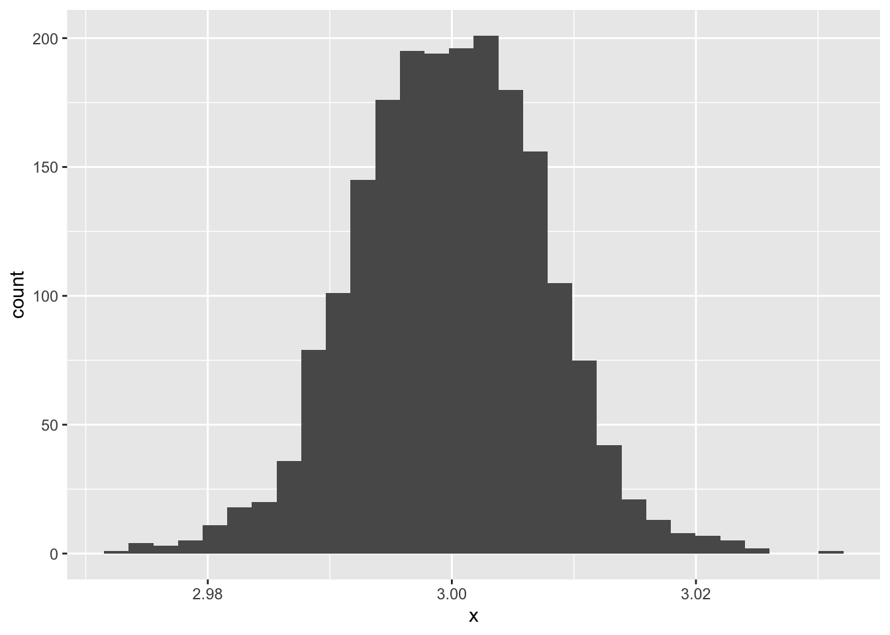

We turn to regression analysis. Simple linear regression fits the linear functional relationship \(y = f(x)\) between a predictor \(x\) and a response \(y\) via
The linear part \(\hat{y}_i\) is the fitted value, and the gap \(e_i = y_i - \hat{y}_i\) is the residual.
Finding the intercept and slope of a line in the plane is the basic problem. Two points determine a unique line; data analysis, however, fits a line to many points, so an external criterion is needed. The criterion “minimise the variance of the residuals” leads to ordinary least squares (OLS); the criterion “assume normal residuals and maximise their likelihood” leads to maximum likelihood estimation (MLE). The former has a descriptive-statistics flavour; the latter is more thoroughly a probability model. A third option, popular when an informative prior is available, is Bayesian estimation.
The OLS estimates have the closed form below. We refer to other texts (小杉 2018; 西内 2017) for proofs; in outline, minimise the residual sum of squares \(\sum e_i^2 = \sum (y_i - (\beta_0 + \beta_1 x_i))^2\) by expansion or partial differentiation. It is gratifying that the result is expressible purely in terms of sample statistics — the means \(\bar{x}, \bar{y}\), the variances \(s_x, s_y\), and the correlation \(r_{xy}\):
We have assumed \(x\) and \(y\) are both continuous; if \(x\) is binary or otherwise categorical, the “line” passes through the group means of \(y\), and “slope = 0” becomes the null hypothesis “all group means are equal” — the same null that drives the \(t\)-test. From this angle, the \(t\)-test and ANOVA are special cases of regression, and the unified framework is the general linear model: the response is continuous, the linear part gives the mean, and a normal residual is added.
ANOVA also accommodates several factors. Setting interactions aside, a two-factor model is
A regression with more than one predictor is called multiple regression. The model is linear in each predictor, so it sits inside the linear-model family. In a multiple regression one often wants to compare predictors by “which has the larger effect on \(y\),” but raw coefficients depend on the unit of each \(x\) and are awkward in that role. The remedy is to standardise all variables first and report the standardised coefficients.
11.2 Properties of regression
We now use concrete data to explore the properties of regression.
11.2.1 Parameter recovery
Generate data from the regression model and then “recover” the parameters by fitting.
We draw the predictor from a uniform distribution and add normal noise with SD \(\sigma\):
x y
1 -4.248450 -11.120952
2 5.766103 18.736432
3 -1.820462 -3.805302
4 7.660348 25.071541
5 8.809346 30.026546
6 -9.088870 -25.355175
dat %>%ggplot(aes(x = x, y = y)) +geom_point() +geom_smooth(method ="lm", formula ="y~x") # draw the linear fit

Regress \(y\) on \(x\):
result.lm <-lm(y ~ x, data = dat)summary(result.lm)
Call:
lm(formula = y ~ x, data = dat)
Residuals:
Min 1Q Median 3Q Max
-2.82796 -0.61831 0.03553 0.69367 2.68062
Coefficients:
Estimate Std. Error t value Pr(>|t|)
(Intercept) 2.021928 0.045010 44.92 <2e-16 ***
x 3.002194 0.007919 379.09 <2e-16 ***
---
Signif. codes: 0 '***' 0.001 '**' 0.01 '*' 0.05 '.' 0.1 ' ' 1
Residual standard error: 1.006 on 498 degrees of freedom
Multiple R-squared: 0.9965, Adjusted R-squared: 0.9965
F-statistic: 1.437e+05 on 1 and 498 DF, p-value: < 2.2e-16
We set \(\beta_0 = 2, \beta_1 = 3, \sigma = 1\); the fitted coefficients are essentially those true values. Recovery accuracy depends on the linearity of the data; with large residual variance or small samples, recovery may not be as clean.
11.2.2 Normality of residuals and residual correlations
lm() returns an object with much more information than is printed. Fitted values and residuals, for instance, are stored on it, and we can use them to study the fit.
dat <-bind_cols(dat, yhat = result.lm$fitted.values, residuals = result.lm$residuals)summary(dat)
x y yhat residuals
Min. :-9.99069 Min. :-28.216 Min. :-27.9721 Min. :-2.82796
1st Qu.:-5.08007 1st Qu.:-13.074 1st Qu.:-13.2294 1st Qu.:-0.61831
Median :-0.46887 Median : 0.301 Median : 0.6143 Median : 0.03553
Mean :-0.09433 Mean : 1.739 Mean : 1.7387 Mean : 0.00000
3rd Qu.: 4.65795 3rd Qu.: 15.963 3rd Qu.: 16.0060 3rd Qu.: 0.69367
Max. : 9.98809 Max. : 32.638 Max. : 32.0081 Max. : 2.68062
The fitted values \(\hat{y}\) are stored in fitted.values. Their mean equals the mean of the response \(y\) — natural, since regression stretches (\(\times \beta_1\)) and shifts (\(+\beta_0\)) \(x\) to fit \(y\), and any such linear map preserves the centre when fitted by OLS.1
Likewise the mean of the residuals is zero. If it were some constant \(c \neq 0\), the intercept would be systematically off by \(c\), and that systematic offset would be absorbed into the best linear fit.2
The regression model also assumes the residuals are normally distributed. A Q-Q plot lets us check this.
dat %>%ggplot(aes(sample = residuals)) +stat_qq() +stat_qq_line()

A Q-Q plot compares two distributions by plotting their quantiles against each other. The x-axis shows quantiles of the theoretical distribution; the y-axis the empirical quantiles. Points lying on a 45° line indicate that the empirical distribution matches the theoretical one; departures from the line indicate departures from the theoretical distribution. Here the points fall close to the line, so no major non-normality.
Depending on how data are generated, the response may be binary, ordinal, or a count — not normally distributed. In such cases forcing a regression is inappropriate. Always visualise the data and check that the model assumptions are reasonable before trusting the output.
You can also pass the fitted object directly to plot(), which produces a set of diagnostic plots: residuals vs fitted values, the Q-Q plot, scale-location, and leverage vs standardised residuals.3
plot(result.lm)




As the residuals-vs-fitted plot suggests, the correlation between them is zero. Visualise it:
pacman::p_load(GGally) # install if not yet availableggpairs(dat)

Residuals are uncorrelated with both the predictor and the fitted values.4 A non-zero residual–predictor correlation would mean that variance in \(y\) explainable by \(x\) is still unexplained; a non-zero residual–fitted correlation would mean that residuals depend systematically on the size of the fitted value (heteroscedasticity, for instance). Bearing these properties in mind, we now look at multiple regression.
11.3 Properties of multiple regression
In a multiple regression the coefficients are called partial regression coefficients. The word “partial” is meaningful.
11.3.1 Regression vs partial regression coefficients
In a simple regression the slope is “the change in \(y\) per unit change in \(x\).” In a multiple regression the partial coefficient is not “the change in \(y\) per unit change in \(x_1\)”; with multiple predictors \(x_2, x_3, \ldots\) also present, that interpretation ignores variation along those other dimensions.
If the predictors were exactly orthogonal (uncorrelated), the changes due to \(x_1\) and \(x_2\) could be cleanly separated, but in practice they are correlated. The partial regression coefficient is the regression coefficient controlling for the other predictors.
We saw above that the residual from a simple regression is uncorrelated with the predictor: all the variance in \(y\) explainable by \(x\) has been removed, leaving as the residual the part of \(y\)’s variance not explainable by \(x\) — i.e., \(y\)’s variance net of the effect of \(x\). (Total variance of \(y\) = variance explained by \(x\) + variance of the residual.)
Now bring in a second predictor \(x_2\). The correlation between \(e_y\) (the residual from regressing \(y\) on \(x_1\)) and \(e_{x_2}\) (the residual from regressing \(x_2\) on \(x_1\)) is the partial correlation. Both residuals have had \(x_1\)’s effect removed, so the partial correlation is the correlation between \(y\) and \(x_2\) controlling for \(x_1\). Partial correlations are important for ruling out “spurious” relationships.
## obtain residuals from two simple regressionsresult.lm1 <-lm(V2 ~ V1, data = X)result.lm2 <-lm(V3 ~ V1, data = X)cor(result.lm1$residuals, result.lm2$residuals)
[1] 0.7867958
## verify with psych::partial.rpsych::partial.r(X)[2, 3]
[1] 0.7867958
The last line uses psych::partial.r() to cross-check; the partial correlation indeed equals the correlation of the two residuals.
The same logic applies to partial regression coefficients themselves: a partial coefficient is the coefficient one would obtain by regressing one residual on another. Confirm this for the dataset above, using \(V_1\) as the response in a multiple regression:
result.mra <-lm(V1 ~ V2 + V3, data = X)# retrieve the coefficientsresult.mra$coefficients
The multiple regression’s V2 coefficient is -0.2778. The coefficient obtained by regressing the residuals (each net of V3) is -0.2778 — the same.
The partial coefficient for V3 follows analogously, by removing the effect of V2 from both V1 and V3 and regressing the residuals. In short, partial regression coefficients are coefficients controlling for the other predictors: “the effect of this variable, conditional on the other variables being equal.”
This belaboured framing is intentional. The “conditional on” qualifier is frequently dropped in reports and interpretations, often misleadingly. 吉田 and 村井 (2021) recently sparked discussion on this point.5 In our example, the partial coefficient for V2 is -0.2778, whereas the simple correlation between V1 and V2 is 0.3. The signs disagree — interpretations of the two would be directly opposed. The actual simple correlation is positive, so reporting (without qualifier) “V2 has a negative effect, V3 a positive one” would mislead.
豊田 (2017) argues that to avoid this trap, one should use conjoint analysis with orthogonalised predictors. If we are not capable of using multiple regression carefully, such alternative designs are well worth considering.
11.3.2 Multicollinearity
One reason partial coefficients are hard to interpret is that the predictors are themselves correlated. When that inter-predictor correlation is very high, it gives rise to multicollinearity — inflation of the standard errors of the regression coefficients.
In the example above, V2 and V3 had correlation \(0.8\). Check the standard errors:
summary(result.mra)
Call:
lm(formula = V1 ~ V2 + V3, data = X)
Residuals:
Min 1Q Median 3Q Max
-2.59118 -0.54717 -0.03692 0.55044 2.90735
Coefficients:
Estimate Std. Error t value Pr(>|t|)
(Intercept) -5.218e-17 2.690e-02 0.000 1
V2 -2.778e-01 4.486e-02 -6.192 8.65e-10 ***
V3 7.222e-01 4.486e-02 16.100 < 2e-16 ***
---
Signif. codes: 0 '***' 0.001 '**' 0.01 '*' 0.05 '.' 0.1 ' ' 1
Residual standard error: 0.8507 on 997 degrees of freedom
Multiple R-squared: 0.2778, Adjusted R-squared: 0.2763
F-statistic: 191.7 on 2 and 997 DF, p-value: < 2.2e-16
The standard error is 0.0449, not problematically large. But as the inter-predictor correlation rises further and one predictor becomes nearly linearly dependent on another, the coefficient estimates become unstable.
The diagnostic for this inflation is the variance inflation factor (VIF). In R, car::vif() accepts a fitted multiple regression and returns each predictor’s VIF. A common rule of thumb is that a VIF above 3 — or above 10 — indicates multicollinearity meriting attention.6
pacman::p_load(car) # install if not availablevif(result.mra)
V2 V3
2.777778 2.777778
The values here are below those thresholds, so we are within an acceptable range.
11.3.3 Variable-entry order
Multiple regression has many predictors, and they can be entered all at once (forced entry) or one at a time. The latter approach, stepwise selection, adds (or removes) predictors based on whether some goodness-of-fit measure improves significantly.
The correlation between \(\hat{y}\) (the fitted values from a multiple regression) and \(y\) is called the multiple correlation coefficient, \(R_{y\hat{y}}\). It is one measure of fit. Like any correlation it lies in \([-1, 1]\), but a value of \(-1\) would be just as good a fit as \(+1\), so the sign is uninformative. Squaring it gives \(R^2\), the coefficient of determination, the fraction of variance in the response explained by the fitted values.7
Stepwise selection comes in forward (start with no predictors and add) and backward (start with all and drop) variants. The forward step asks whether adding a candidate predictor significantly increases \(R^2\); the backward step asks whether removing one significantly decreases it. The procedure finds the combination of predictors best fitting the data in hand, but the repeated testing has the usual multiple-comparisons issues, and the procedure is also questioned for weak generalisability.
A different motivation for stepwise entry is hierarchical regression, developed for examining interactions. Multiple regression prefers uncorrelated predictors, but interactions are essential effects of combinations between predictors — and they are correlated with the main effects by construction. Regression and ANOVA are unified under the general linear model, and regression too can express interaction effects between continuously varying predictors. Because interactions imply non-zero inter-predictor correlations, their inclusion can trip the basic assumption of regression and so deserves care.
The recommendation, then, is to enter the main effects first, then add interaction terms, and check whether model fit improves significantly. This stepwise procedure is called hierarchical regression. Here “hierarchical” refers to the ordering of steps by importance, not to a hierarchical structure of the data.8
11.4 Standard errors of coefficients and tests
11.4.1 Testing the coefficients
Because the sample is a random variable drawn from a population, the (partial) regression coefficients are also random variables: they vary from sample to sample, and that variability has some probability distribution. We can study that distribution by simulation.
set.seed(123)n <-500beta0 <-2beta1 <-3sigma <-1# data-generation helperdataMake <-function(n, beta0, beta1, sigma) { x <-runif(n, -10, 10) e <-rnorm(n, 0, sigma) y <- beta0 + beta1 * x + e dat <-data.frame(x, y)return(dat)}# storageiter <-2000beta0.est <-rep(NA, iter)beta1.est <-rep(NA, iter)# simulationfor (i in1:iter) { sample <-dataMake(n, beta0, beta1, sigma) result.lm <-lm(y ~ x, data = sample) beta0.est[i] <- result.lm$coefficients[1] beta1.est[i] <- result.lm$coefficients[2]}data.frame(x = beta0.est) %>%ggplot(aes(x = x)) +geom_histogram()
`stat_bin()` using `bins = 30`. Pick better value `binwidth`.
`stat_bin()` using `bins = 30`. Pick better value `binwidth`.

Coefficients do indeed vary; their average lies near the true value.
mean(beta0.est)
[1] 1.999257
mean(beta1.est)
[1] 2.999798
The width of this distribution is the standard error of the coefficient.
sd(beta0.est)
[1] 0.04580387
sd(beta1.est)
[1] 0.007659277
A regression coefficient follows a \(t\)-distribution with \(n - p\) degrees of freedom (sample size minus number of fitted coefficients). Standardise the histogram and overlay the theoretical density:
Call:
lm(formula = y ~ x1 + x2, data = sample)
Residuals:
Min 1Q Median 3Q Max
-2.85235 -0.68275 -0.01436 0.67809 2.70488
Coefficients:
Estimate Std. Error t value Pr(>|t|)
(Intercept) 1.996999 0.045263 44.120 <2e-16 ***
x1 -0.006453 0.007970 -0.810 0.418
x2 -0.003928 0.007795 -0.504 0.615
---
Signif. codes: 0 '***' 0.001 '**' 0.01 '*' 0.05 '.' 0.1 ' ' 1
Residual standard error: 1.012 on 497 degrees of freedom
Multiple R-squared: 0.001893, Adjusted R-squared: -0.002124
F-statistic: 0.4713 on 2 and 497 DF, p-value: 0.6245
The \(F\)-statistic on $(\(2, 497\))$ degrees of freedom is 0.4713, not significant (p = 0.6245, n.s.).
This is a test of the multiple correlation: the null is that the model as a whole has no explanatory power in the population. With \(p\) predictors, sample size \(n\), and multiple correlation \(R^2\), the test statistic is (南風原 2014)
\[ F = \frac{R^2}{1-R^2}\cdot\frac{n-p-1}{p}. \]
The first factor, \(f^2 = R^2/(1 - R^2)\), is Cohen’s \(f^2\), the effect size used for sample-size planning.
11.5 Sample-size planning
If the effect sizes of the predictors (the regression coefficients) are known in advance, sample-size planning can proceed by a simulation that gradually increases \(n\). In practice, however, those are rarely known, and one uses the \(R^2\) test to find the sample size that delivers the desired power at a given effect size.
The relevant distribution is the non-central F-distribution. Its non-centrality parameter is the effect size \(f^2\) times \(n\).
f2 <-0.15# effect sizealpha <-0.05# Type I error ratebeta <-0.2# Type II error ratep <-5# number of predictorsfor (n in10:500) { lambda <- f2 * n df1 <- p df2 <- n - p -1 cv <-qf(p =1- alpha, df1, df2) t2error <-pf(q = cv, df1, df2, ncp = lambda)if (t2error < beta) {break }}print(n)
[1] 92
Under these settings, \(n \geq\) 92 is sufficient to claim that the model has non-zero explanatory power.
11.6 Summary
Multiple regression is heavily used in the humanities and social sciences, but the technique often outruns understanding. We recap the cautionary points.
Meaning of partial coefficients. A partial coefficient is conditional on the other predictors; treating coefficients as if independently orthogonal is incorrect.
Normality of errors. The model assumes normal errors. Do not apply regression blindly to binary or count data. Check normality after the fit with a Q-Q plot.
Homoscedasticity of errors. The model assumes errors share the same normal distribution everywhere; heteroscedasticity (variance depending on the predictor) violates this and is unmasked by Q-Q-style diagnostics.
Independence of errors. The model assumes errors are i.i.d. Time-series data with serial dependence (autoregression) breaks this; use a state-space model or other approach that models the dependence.
Correct model specification. All predictors that influence \(y\) must be included. Omitting an influential variable \(X_o\) that correlates with an included \(X_a\) causes \(X_o\)’s effect to leak through \(X_a\), distorting \(X_a\)’s estimated effect. Deliberately excluding variables to favour a hypothesis is a QRP.
Inter-predictor correlations. If two predictors are very highly correlated, multicollinearity becomes a concern; coefficient estimates become unstable. Mitigations include combining them via principal component analysis. If the goal is to study interactions rather than collinearity, enter terms one at a time and assess effects carefully (hierarchical regression). Interaction terms are usually constructed from the mean-centred deviation of each variable.
11.7 Exercises
The following dataset is sample data for a multiple regression with response \(y\) and predictors \(x_1, x_2\). Only a few rows are shown; the full dataset (\(n = 100\)) is available at ex_regression1.csv. Run a multiple regression and report the results.
The following dataset is sample data for a multiple regression with response \(y\) and predictors \(x_1, x_2\). Only a few rows are shown; the full dataset (\(n = 300\)) is available at ex_regression2.csv. Run a multiple regression. From the diagnostic plots, identify which of the listed regression assumptions appear to be violated.
Compute the sample size required to achieve power \(1 - \beta = 0.8\) for a multiple regression with \(p = 10\) predictors targeting \(R^2 = 0.3\), with \(\alpha = 0.05\) and \(\beta = 0.2\).
Large standardised residuals indicate likely outliers requiring careful interpretation. Leverage indicates a point’s influence on the regression coefficients; observations near the edges of this plot also deserve attention.↩︎
After the paper appeared in early-access form, the Japanese Psychological Association hosted an online symposium with the author and the authors of the paper criticised (Japan Psychological Association YouTube Live, “Conversations with Authors of Notable Papers,” 2 July 2021, 20:00–21:40 JST). Despite the weekday-evening slot and the not-yet-final article, nearly 1,700 viewers attended.↩︎
In a two-predictor multiple regression, VIF \(= 3\) corresponds to inter-predictor correlation \(r \approx 0.81\); VIF \(= 10\) corresponds to \(r \approx 0.97\). See 小杉 et al. (2023) for details.↩︎
A linear model that does explicitly model hierarchical data structure (e.g., classroom ⊂ municipality ⊂ prefecture) is the hierarchical linear model (HLM).↩︎